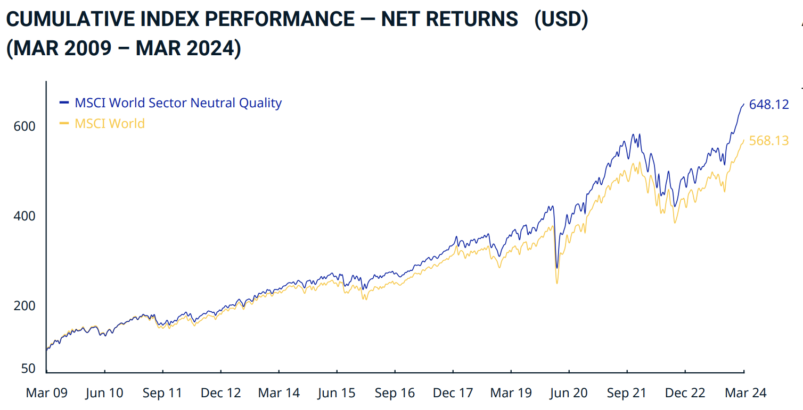
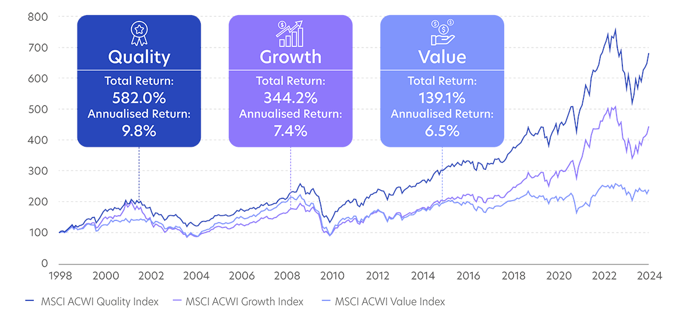
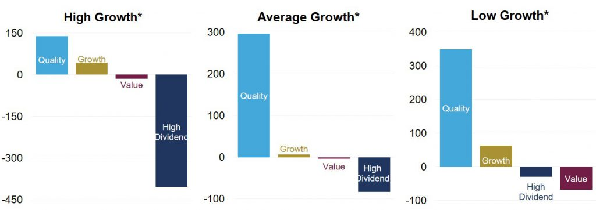

Bienvenue dans le cœur du réacteur de cette formation. Jusqu'ici, nous avons posé les bases : vous savez ce qu'est la Bourse, pourquoi il faut investir et comment éviter les pièges du trading. Maintenant, nous allons entrer dans le vif du sujet : la méthode spécifique qui m'a permis de battre le marché et qui a bâti la fortune des légendes comme Warren Buffett, Charlie Munger ou Terry Smith.
En Bourse, il existe des dizaines de "religions" : les chasseurs de dividendes, les spéculateurs de la tech (Growth), les chercheurs d'actions bradées (Value)... Alors pourquoi, parmi toutes ces options, est-ce que je considère le Quality Investing comme la voie royale, l'arme absolue pour l'investisseur particulier qui veut s'enrichir sereinement ?
La réponse ne tient pas en une phrase, mais en une démonstration complète basée sur 8 piliers fondamentaux.
1. La Surperformance : Les chiffres ne mentent pas 📈
Commençons par le nerf de la guerre : la rentabilité. Une croyance populaire tenace voudrait que pour gagner gros, il faille prendre des risques énormes en pariant sur la prochaine start-up révolutionnaire ou la petite biotech obscure. C'est faux.
La réalité statistique est contre-intuitive : ce sont les entreprises "ennuyeuses", solides et déjà dominantes qui rapportent le plus sur la durée.
Regardons d'abord une comparaison simple. Le graphique ci-dessous met face à face l'indice mondial classique (MSCI World), qui achète tout le marché aveuglément, et l'indice MSCI World Quality, qui applique un filtre de sélection pour ne garder que les entreprises rentables, peu endettées et aux revenus stables.

Le constat est sans appel : en ne gardant que "la crème de la crème", vous évitez les boulets (entreprises cycliques, faillites, modèles économiques fragiles) qui tirent la performance moyenne vers le bas. C'est le premier étage de la fusée : la sélection naturelle appliquée à votre portefeuille.
Avec un "bête" filtre Quality, il est possible de battre facilement l'ETF MSCI World avec le MSCI World Quality, qui est moins connus. Attention juste à regarder la différence des frais de gestion.
2. Le Match des Stratégies : Quality vs le Reste du Monde 🥊
Vous pourriez me dire : "D'accord pour l'indice global, mais pourquoi ne pas faire du Growth agressif ou de la Value à l'ancienne ?" C'est une excellente question. Pour y répondre, regardons ce que l'histoire nous enseigne sur les 25 dernières années.
Le graphique suivant compare les trois grandes écoles d'investissement :
- 🟦 Quality : Acheter les meilleures entreprises.
- 🟪 Growth : Acheter la croissance la plus forte (souvent cher).
- 🟦 Value : Acheter ce qui n'est pas cher (souvent médiocre).

L'analyse des chiffres est brutale :
- 🥇 Quality (582% de rendement) : C'est le grand gagnant incontesté. Pourquoi ? Parce qu'elle capture le meilleur des deux mondes. Elle offre la croissance du "Growth" sans ses bulles spéculatives qui éclatent, et la solidité du "Value" sans ses entreprises en déclin qui font faillite.
- 🥈 Growth (344%) : C'est honorable, mais le parcours est violent. En pariant sur la croissance pure, vous achetez souvent des entreprises "à la mode" qui sont surévaluées. Quand la mode passe ou que les taux montent, le cours s'effondre de -50%.
- 🥉 Value (139%) : C'est la grande perdante de l'ère moderne. En cherchant obsessionnellement à acheter "pas cher", on ramasse souvent des "Value Traps" (pièges de valeur) : des entreprises qui ne sont pas chères pour une bonne raison (leur business est en train de mourir).
3. Une stratégie "Tous Terrains" (La Robustesse) 🚜
Le dernier argument en faveur de la Qualité est sa résilience. Certaines stratégies marchent très bien quand tout va bien (Growth), mais s'effondrent en temps de crise. D'autres ne marchent que quand l'économie va mal (Défensif).
La stratégie Quality est la seule qui fonctionne quel que soit le météo économique. Regardez ce graphique fascinant qui montre la performance relative des stratégies selon le niveau de croissance économique :

Ce graphique nous apprend quelque chose d'essentiel pour votre sérénité mentale :
- Quand l'économie est en plein boom ("High Growth"), la Qualité capte la hausse.
- Quand l'économie ralentit ("Low Growth"), la Qualité surperforme encore plus massivement, car les investisseurs fuient les entreprises fragiles pour se réfugier vers la solidité (Flight to Quality).
Contrairement aux autres stratégies (Value ou Dividende) qui finissent souvent dans le rouge (barres sous la ligne zéro) selon les cycles, la Qualité reste positive. C'est le 4x4 de l'investissement.
Le Paradoxe du Risque/Rendement 🧠
En théorie financière classique, on apprend à l'école qu'il faut prendre plus de risques pour avoir plus de rendement (High Risk = High Reward).
La stratégie Quality prouve l'inverse : En achetant des entreprises moins risquées (bilans solides, revenus récurrents, positions dominantes), on obtient un rendement supérieur à la moyenne. C'est l'anomalie de marché la plus profitable qui soit.
4. L'Arme Anti-Inflation : Le "Pricing Power" 🛡️
L'inflation est le tueur silencieux des entreprises médiocres. Quand le coût de l'énergie, des matières premières ou des salaires augmente, la plupart des entreprises (constructeurs auto, supermarchés, industrie) voient leurs marges se faire écraser. Elles n'osent pas augmenter leurs prix de peur de perdre leurs clients.
Les entreprises Quality possèdent le Saint Graal : le Pricing Power (Pouvoir de fixation des prix).
Parce qu'elles vendent des produits uniques, indispensables ou addictifs (logiciels Microsoft, sacs Hermès, notations S&P Global), elles peuvent augmenter leurs prix plus vite que l'inflation sans perdre de clients.
- Si l'inflation est de 4%, une entreprise Quality augmentera ses prix de 6%.
- Résultat : Non seulement elle est protégée, mais elle gagne plus d'argent en période d'inflation.
C'est la seule protection réelle pour votre pouvoir d'achat.
5. Le Facteur Sommeil : L'Anti-Fragilité 😴
C'est l'argument préféré de ceux qui ont déjà vécu un vrai krach boursier avec de l'argent réel. Quand le marché perd -30% (comme pendant le Covid ou en 2022), c'est la panique. Tout le monde vend. Quelles sont les entreprises qui survivent et qui repartent le plus vite ?
- ❌ Les entreprises "Growth" non rentables ? Elles meurent souvent. Elles brûlent du cash, elles ont besoin de lever des fonds, mais les banques ferment le robinet en temps de crise. Résultat : faillite ou dilution massive des actionnaires.
- ❌ Les entreprises "Value" endettées ? Elles sont étranglées. Leurs marges sont faibles, et si les taux d'intérêt montent, le poids de leur dette devient insupportable.
- ✅ Les entreprises "Quality" ? Elles sont "Anti-Fragiles". Elles n'ont pas de dettes, elles sont assises sur des montagnes de cash. Mieux encore : elles profitent souvent des crises pour racheter leurs concurrents plus faibles à bas prix et gagner des parts de marché.
Investir Quality, c'est savoir que même si la Bourse ferme pendant 5 ans, vos entreprises (LVMH, Microsoft, Air Liquide) seront toujours là à la réouverture, plus fortes que jamais, continuant à vendre leurs produits indispensables.
6. L'Effet Lindy : Investir dans les Gagnants 🏛️
C'est un concept puissant souvent ignoré, qui valide scientifiquement notre approche : L'Effet Lindy. Contrairement à l'intuition humaine, pour certaines choses, plus elles sont vieilles, plus elles ont de l'avenir.
- Pour les choses non périssables (comme les idées, les technologies ou les business models), l'espérance de vie future est proportionnelle à leur capacité de survie passée.
- Traduction boursière : Une entreprise qui a déjà prouvé la solidité de son modèle économique a plus de chances de continuer à dominer qu'une entreprise qui doit encore faire ses preuves.
Une erreur classique de débutant est de chercher "Le prochain Amazon". C'est chercher une aiguille dans une botte de foin. La stratégie Quality prend le problème à l'envers : Pourquoi ne pas simplement acheter l'Amazon d'aujourd'hui ?
Nous n'investissons pas dans des "vieilles" entreprises endormies, mais dans des champions qui ont prouvé leur modèle. Nous achetons les leaders mondiaux qui ont déjà écrasé la concurrence, qui ont déjà les meilleures marges et les meilleurs produits. On ne parie pas sur un cheval qui pourrait devenir rapide. On mise sur le cheval qui est déjà en tête de la course.
Contrairement aux IPOs comme vu plus tôt au module 3 ou aux actions "Growth" spéculatives qui vous vendent une promesse de rentabilité future, les entreprises Quality sont celles qui ont déjà gagné.
Nous n'investissons pas dans des "vieilles" entreprises endormies, mais dans des champions aux fondamentaux exceptionnels (marges élevées, trésorerie abondante, peu de dettes). Ce sont ces entreprises, armées de leur Pricing Power et de leur solidité financière, qui sont les mieux placées pour :
- 🛡️ Résister aux futurs krachs : Elles n'ont pas besoin de la banque pour survivre.
- 💰 Gagner le plus d'argent demain : Elles disposent des ressources pour innover, racheter leurs concurrents et continuer à croître, là où les autres luttent pour leur survie.
7. La Paresse Rentable : L'art de ne rien faire 🧘
Si vous choisissez la stratégie "Value", vous êtes condamné à travailler. Vous devez trouver une entreprise sous-évaluée, l'acheter, attendre qu'elle remonte à son juste prix, puis la vendre pour empocher votre gain. Et ensuite ? Vous devez recommencer le processus, trouver une autre idée, payer des impôts sur la plus-value, payer des frais de courtage...
Avec une entreprise "Quality", la logique est inverse. C'est une machine à composer. Comme l'entreprise augmente ses bénéfices année après année, sa valeur intrinsèque monte indéfiniment.
Résultat : Vous n'avez jamais besoin de vendre. Vous achetez une fois, et vous laissez faire le temps. C'est la seule stratégie qui permet de faire x10, x50 ou x100 sur une seule ligne sans jamais payer un centime d'impôt sur la plus-value tant que vous gardez le titre. C'est l'efficience fiscale ultime.
8. La Preuve par l'Exemple : Ça marche pour moi ✅
Je ne suis pas un analyste expert de Wall Street. Je n'ai pas d'équipe de 50 chercheurs. Je suis un investisseur particulier, comme vous. Et pourtant, cette méthode m'a permis de battre le marché plusieurs fois.
En appliquant rigoureusement ces critères de sélection (que je vais vous détailler dans les chapitres suivants), mon portefeuille a surperformé le marché (S&P 500 et CAC 40) deux années consécutives. À moi de continuer sur cette lancée !
Ce n'est pas de la chance, c'est de la sélection. En éliminant les "pommes pourries" (entreprises endettées, non rentables, sans croissance) et ne sélectionnant que l'extrême qualité, on se retrouve avec les plus belles boites du monde. Vous pouvez vérifier mes performances et chaque ligne de mon portefeuille en toute transparence ici :
🔑 Ce qu'il faut retenir
La stratégie Quality n'est pas une mode, c'est une approche mathématique supérieure.
1. Rentabilité : Elle bat le marché et toutes les autres stratégies sur le long terme.
2. Robustesse : Elle performe dans tous les environnements économiques (croissance ou récession).
3. Sérénité : Elle vous protège des faillites et vous permet de dormir tranquille.
C'est l'investissement de ceux qui ont compris que le but n'est pas de devenir riche vite, mais de devenir riche sûrement et pour toujours.